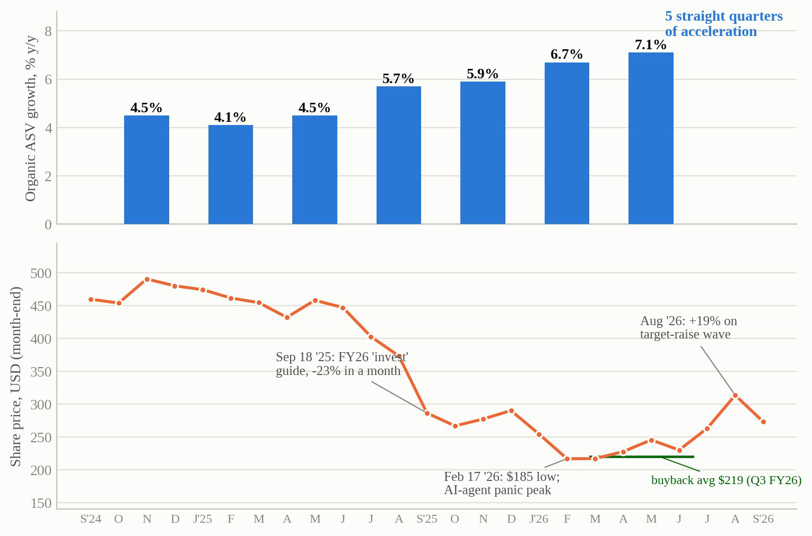
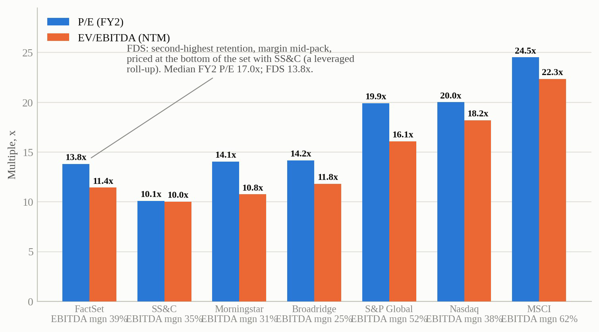
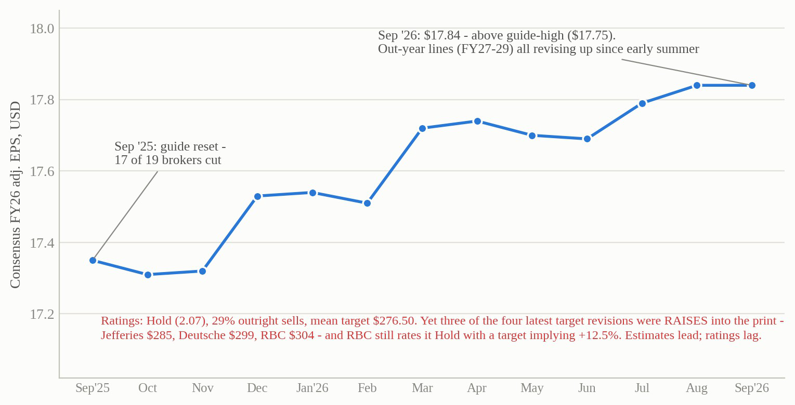

Full thesis · NYSE: FDS
FactSet Research Systems (NYSE: FDS) – Long
1. Investment thesis
FactSet trades at roughly half of its own five-year average multiple because the market believes AI-driven cuts to junior analyst headcount will decay its subscription base. At $266, a reverse DCF implies the market is pricing perpetual free-cash-flow growth of under 2%, which prices the business for permanent stagnation. That price is dependent on seat cuts actually transmitting into lower FactSet revenue – I believe they largely cannot. If the market's belief fails, the position re-rates: while it holds, per-share value still compounds at around 11% a year without the multiple moving.
The bear case argues that the reduction in junior seats across finance (particularly banking and research) will lead to a revenue reduction – but this relies on revenue being priced per seat to hold true. For most of FactSet's book, it is not. Market Infrastructure (17% of ASV, including CUSIP) is licensed per firm and system; Wealth (16%) is platform-priced on advisor headcount that is growing rapidly; the institutional buy-side (48%) is predominantly priced at the enterprise or AUM level (although to which degree is debated); only Dealmakers (19%) bills per analyst, and it is the channel my base case haircuts the hardest as a result (Exhibit 2). Management puts seat-linked revenue below 20% (although this claim is unaudited and contested – Redburn estimates approximately 75% is terminal-derived); ultimately, the market is pricing a far stronger transmission mechanism than the evidence supports. The 10 November Investor Day is the first opportunity for management to quantify the current disputed portion. Monetisation, meanwhile, is shifting from seat to the workflow itself: an AI agent does not require a terminal licence, but it does need entitled data – more than 20% of FactSet's top 100 clients now pay for its agent-facing data product. Organic ASV growth has accelerated for five straight quarters (4.1% to 7.1%) and held at 7.0% in Q4, supported in cash by deferred revenue running ahead of revenue.
The street models the FY26 margin trough of 34.5% as permanent through FY28, yet the cost programme behind it is documented: 27% of committed code is now authored by AI, the technology workforce has been reduced 10%, more than half of the targeted 100bps of annual productivity was captured by Q2, and a Google Cloud agreement caps the AI input cost through preferential token pricing. These numbers come straight from management and are corroborated independently: compulsory layoff filings disclose nothing other than the 10% technology staffing cut, and employee reviews complain most in the units being cut (Appendix A, tests 11 and 15). Compensation is roughly 60% of the cost base, so the market is pricing AI solely as a threat to FactSet without acknowledging that AI is reducing the largest cost. My margin path reaches 37.5% by FY31, which remains below the FY24 peak of 37.8%. The initial FY27 guide (34.75-35.25%) has since confirmed the trough, with management calling 34.5% a floor.
I also disagree with the street's buyback estimate of $333M. Their estimate is simply the unspent residual of the current authorisation ($356.0M remaining on 31 August). For the street to be right, the board would have to stop repurchasing entirely once the current authorisation runs out – nothing in FactSet's track record supports this. The firm has repurchased shares in every one of the last ten years (pausing only to repay the 2022 CGS deal debt), and the current programme – raised 2.5× to $1B in December – repurchased $644M in fiscal 2026, more than double the prior year. At that pace, roughly 5% of shares are retired each year at around 14× earnings.
If the market refuses to concede the seat question, margin recovery and repurchases still compound EPS at approximately 12% per year. What the thesis cannot survive is retention breaking, which the exit conditions laid out in Section 6 watch. Revenue throughout is modelled at consensus – the thesis is not dependent on beating revenue forecasts.

Source: FactSet earnings releases Q1 FY25–Q3 FY26 (organic ASV); FactSet Price History (25 Sep '26 last close); Q3 FY26 10-Q (buyback).
2. The business, the moat, and management
FactSet is a financial data and analytics platform with $2.5B of annual subscription value across four main client channels (reported as a single segment). The moat, created by deep workflow integration, licensed data entitlements, and the retraining cost of moving users off the platform, is exceptionally strong – proven by the fact that ASV retention held above 95% through a −61% drawdown and an industry-wide AI panic.
Management's EPS and revenue guidance has been within a percent of actuals for three consecutive years, and capital allocation has been disciplined (with the one notable exception of CUSIP Global Services, bought for $1.9B at the 2022 peak and now the source of an antitrust class action from the customers who pay its licensing fees – Section 6). The stock is currently cheap following a collapse from $480 to $185 from December 2024 to February 2026, caused by a gradual de-rating through 2025 as AI fears built, then two sharp legs down – the September 2025 'invest' guidance reset and the February 2026 AI-agent panic. The register shows that growth funds sold during the decline and value institutions arrived in spring 2026, and short interest has doubled, too: the shareholder base is turning over at the bottom (Appendix D).
3. The bear case
The strongest version of the bear case has three parts. Firstly, the Dealmakers segment is genuine per-seat exposure at 19% of ASV, and its current 9% growth is partly a deal-cycle recovery rather than a durable growth rate. Secondly, ASV lags contracts as any seat cuts will only appear when multi-year enterprise deals are due for renewal (mostly between 2027 and 2029), so five quarters of accelerating growth cannot alone refute the bear case. Lastly, revenue per user is falling by roughly 4-5% (users +12%, ASV +7.1%), albeit this simply reflects the wealth-seat increase, and management is on record that, so far, extended contracts are carrying no price compression.
There are two ways in which this bear case can be challenged. The first is to stress test the damage the scenario implies and compare that against what the current price assumes already. If seat cuts remove a third of the dealmaker book by 2029 during the renewal cycles, total ASV growth drops 2% per year – this is approximately the rate currently priced in at $266, meaning even the bear case is roughly what I am paying for today. Furthermore, the dispute over the percentage of ASV that is seat-sensitive is limited: while management, which estimates it at sub-20%, naturally has an incentive to understate, Redburn's 75% estimate would require a third of ASV (Market Infrastructure and Wealth) to be priced per seat when it is not, and a bank reducing junior seats by a third to cancel a third of an enterprise contract. Exhibit 2b runs the range between these bounds and finds that the realistic middle produces the bear case of $240 rather than a broken thesis (I should note that if that scenario were developing, the kill-switches in Appendix C are designed to catch it early). This exact experiment also ran before during the bank failures and consolidations of fiscal 2009. While FactSet lost 2,800 users (7% of its seat base), ASV finished the year higher ($615M to $619M), retention held above 95%, and organic growth was back to 7% by fiscal 2010.
The second way to challenge the bear case is on its timeline. The bear's mechanism is most likely to rear its head during the 2027–29 renewals, meaning each period that passes with ASV holding above 6% narrows the window in which the thesis can come true – by late 2027, the argument that the damage has not yet arrived will no longer hold for either side. It is also worth noting that FactSet is not an outlier: the five subscription vendors serving the same client base (MSCI, LSEG, Moody's, Morningstar, S&P Global) are all accelerating, and none show any sign of the behaviour the bear fears.
| Channel | % ASV | Growth | Seat exposure | Evidence (as of Sep '26) |
|---|---|---|---|---|
| Wealth | 16% | +9% | LOW - seats growing | Advisor headcount rising (LPL 32,000+, record); 23,000 desktops added FY24; LPL chose FactSet Q3 FY26 |
| Market Infrastructure (incl. CUSIP) | 17% | +8% | NONE - system-licensed | Identifiers and feeds licensed per firm and system, not per person; scales with issuance, not analyst count |
| Institutional Buy-Side | 48% | +5% | MODERATE - migrating off the seat | Enterprise/portfolio pricing; mgmt <20% seat-linked (unaudited). Redburn ~75% terminal-derived; own split ~51% terminals, ~25% aggregated data (not seats) |
| Dealmakers (IB) | 19% | +9% | HIGH - per-analyst usage | Forecast: McKinsey 'up to 2/3 class cuts'. Realised 2026: GS interns ~2.5-2.6k (flat), JPM 4.5k, BofA 'AI isn't shrinking the class'. Risk deferred, not dead. |
Source: FDS Q4 FY26 release (firm-type ASV); LPL Q2 '26; Fortune 7 Jun '26 (McKinsey); Business Insider 3 Jun '26; 2026 class data; Redburn note Jun '26; FY08/FY09 10-Ks and Q4 FY09/FY10 releases (2008–09 precedent).
| Effective seat-sensitive share | 10% seat cut | 25% seat cut | 33% seat cut |
|---|---|---|---|
| 20% of ASV seat-sensitive (management's claim) | ASV ~6.3% immaterial | ASV ~5.3% base intact | ASV ~4.8% the case already priced at $266 |
| 45% (midpoint) | ASV ~5.5% manageable | ASV ~3.3% near bear ($240) | ASV ~2.1% kill-switch exits first |
| 70% (Redburn read) | ASV ~4.7% margin + buyback must carry | ASV ~1.2% kill-switch exits first | ASV ~−0.7% thesis broken |
Kill-switches (Appendix C) exit at ASV <5% for two quarters – before the red cells compound. Source: FDS_Model_AW.xlsx (Scenarios — seat-stress grid); FDS Q4 FY26 release (channel mix); Redburn note Jun '26.
4. Earning power and valuation
When I discount the street's own forecasts at the same 9% WACC and 3% terminal growth as my DCF, I arrive at $347 per share against a price of $266. This shows the valuation gap between me and the street does not come from estimates: my revenue matches consensus (FY27: $2,618M vs $2,615M), my GAAP EPS is within two cents, and the only real variance is margin and share count (Exhibit 3). Instead, for $266 to be right once the street's five-year path is credited, the market must be running terminal growth of roughly 0.8%, or a 10.6% discount rate, on a subscription book with 95% retention. This is the seat fear translated into discounting. Ultimately, margin and share count add roughly $33 of value on top of the $347; the remaining ~$81 of the gap comes from the discounting itself.
| FY26A | FY27E | FY28E | FY29E | FY30E | FY31E | |
|---|---|---|---|---|---|---|
| Revenue, $M (base) | 2,476 | 2,618 | 2,780 | 2,944 | 3,110 | 3,287 |
| Street revenue | 2,471 | 2,615 | 2,775 | - | - | - |
| Adj. op. margin (base) | 34.5% | 35.0% | 35.8% | 36.5% | 37.0% | 37.5% |
| Street margin (flat trough) | 34.6% | 34.5% | 34.2% | - | - | - |
| Adj. EPS (base) | 18.01 | 19.99 | 22.77 | 25.89 | 29.15 | 32.78 |
| Street adj. EPS (cons. trend FY29) | 17.84 | 19.76 | 21.87 | ~24.2 | - | - |
| Buybacks, $M (base; FY26 = actual) | 644 | 550 | 560 | 575 | 590 | 600 |
| Street buyback (= auth. residual) | - | 333 | - | - | - | - |
| FCF, $M (base vs street) | 707 | 751 / 695 | 840 / 731 | 925 | 1,011 | 1,101 |
| Avg diluted shares, M | 36.6 | 35.2 | 33.7 | 32.3 | 31.1 | 30.0 |
Note: the model assumes no further M&A. In practice FactSet keeps making small bolt-on acquisitions (three in the past year), which would be funded from the same cash modelled for buybacks. Source: FDS_Model_AW.xlsx (FY26A = reported actuals); FactSet Estimates 27–28 Sep '26 (FY29 from consensus trend). Authorisation: $356.0M remaining at 31 Aug '26 (Q4 FY26 release).
Blending four methods (Exhibit 4) gives a target of $350, 32% above the current price and equivalent to 17.5× FY27 earnings – still roughly half the stock's own five-year average multiple. The methods land close together ($315–372), and equal-weighting them gives $343, so the weights are not driving the answer. Against this, the bear case is worth $240 (−10%).
| Method (12–18 mo, on FY27E) | Value | Weight | Key assumptions (all live cells in the model) |
|---|---|---|---|
| Probability-weighted scenario DCF | $372 | 40% | WACC 9.0% (bottom-up β 0.90; FactSet's own est. 7.8%); g 3.0%; bear / base / bull $240 / $380 / $515 weighted 25 / 55 / 20 |
| P/E comparables | $315 | 20% | 6-peer median 17.0× (FY2: MORN, SPGI, MSCI, BR, SSNC, NDAQ) less 7.5% CUSIP/mix discount, × FY27E adj. EPS $19.99 |
| EV/EBITDA comparables | $332 | 15% | Median 14.0× less 7.5%, on FY27E EBITDA $1,009M (GAAP basis), less FY26A net debt $1.07B |
| Free-cash-flow yield | $355 | 25% | 6.0% target yield on FY27E FCF $21.34/sh vs 5.2% 10Y; cash-return yield today 7.3% (1.7% dividend + 5.6% buyback) plus ~4-5% per-share growth ≈ 11%/yr per-share compounding |
| Street-estimate DCF (check) | $347 | — | Consensus forecasts at the same WACC 9.0% / g 3.0%; for $266 to hold, the market must run g ≈0.8% or WACC ≈10.6% |
| BLENDED PRICE TARGET | $350 | +32% | = 17.5× FY27E adj. EPS - still roughly half the 5-yr avg multiple of 33.9× |
Equal-weighting the four methods gives $343 — the weights are not driving the target. Bear $240 sits above the February low of $185 because it is a fundamental scenario rather than a panic print; the kill-switches (Appendix C) are designed to exit before it fully prices. Gap decomposition: $266 → $347 street discounting (~$81); $347 → $380 margin + share count (~$33). Source: FDS_Model_AW.xlsx (Price Target sheet; all values recompute live). Comps: FactSet Comps Analysis pull, 27 Sep '26.
5. Catalysts
The multiple will only move when the seat worries are resolved – I believe three things can do so: the 10 November Investor Day, where management can quantify seat-linked vs consumption revenue, and collapse the bear case by doing so; the 2027-2029 renewal clock, which forces the bear's mechanism to either appear on schedule or expire; and AI revenue becoming a disclosed line, converting the narrative from a key business threat to a revenue driver.
As I have mentioned, even before this there are three dated events that pay the position regardless. The 30 September print brought the initial FY27 margin guide in at a 35.0% midpoint, above the street's flat 34.5% (the print is scored against my pre-registered expectations in Appendix B). A new buyback authorisation – none yet announced, with $356M remaining – would mechanically retire the street's $333M assumption. Finally, the court's redacted class-certification opinion – the ruling on whether the CUSIP plaintiffs can sue as a group – publishes around 2 October.
The entry was structured around the 30 September print: options implied a ±10% move, so the plan was half a position before it, the second half conditional on an in-line-or-better FY27 margin guide – a bar the guide met. Finally, at 11× EBITDA with 95% retention, FactSet is a plausible target for strategic or private-equity buyers. The market prices this possibility at zero, so it is effectively a free option for the holder.
6. Risks
Each of the four main risks is dated or has a pre-set response. Seat-linkage disclosure may disappoint at the Investor Day, in which case resolution waits for the 2027–29 renewals. An adverse CUSIP ruling, or an injunctive change to the licensing model, ends the position. If rates stay high, multiples on long-duration assets may stay compressed regardless of fundamentals – the position still compounds at around 11% a year while I wait. And there has been no CEO open-market purchase, although officer buys in autumn 2025 at $253–296 are on the record. Exit discipline is set in advance: any two of the six kill-switch conditions in Appendix C (for example, ASV below 5% for two consecutive quarters, or retention below 95%) and the position is closed regardless of price. The switches fire with a lag, so a disciplined exit realistically costs 15–20% from entry; the half-position start is sized against exactly that loss. The credit market, meanwhile, sees none of this risk: ratings are stable at BBB+/Baa3, spreads have not moved, and the banks upsized the revolver in August – the bond market is not pricing the disruption story the equity market is (ownership and balance-sheet detail in Appendix D).
Appendices: A: Evidence ledger (15 pre-registered tests) · B: 30 Sep scorecard · C: Kill-switches and catalyst calendar · D: Positioning and credit · E: Supplementary exhibits.
Appendix A: Evidence ledger — 15 pre-registered tests
Every test pre-registered with bull/bear predictions before looking; nulls and warts reported. None fatal; one contradiction (no CEO open-market buy) disclosed.
| # | Test (independent of management) | Finding | Verdict |
|---|---|---|---|
| 1 | ASV acceleration (audited filings) | 4.1% → 7.1% over five straight quarters, 7.0% in Q4 FY26; organic revenue +7.1% confirms conversion | GOOD |
| 2 | Peer subscription base rate | MSCI 8.1% accel; LSEG 6.3%; MCO ~9%; MORN 6.8%; SPGI 6% - no cracks anywhere | GOOD |
| 3 | Estimate revisions vs ratings | FY26 EPS 17.35→17.84 over 9 months; rating still Hold (2.07), target ~spot | GOOD |
| 4 | Credit market | BBB+/Baa3 stable; ~T+110-130bp; revolver upsized to $1.5B Aug '26; 1.3× net; Z-score 4.4 | GOOD |
| 5 | Ownership tape | Baron #1, +411k; Vanguard active arms initiated 7.2%+4.8%; AQR +1.37M; shorts 10.8% of float | GOOD |
| 6 | Insider filings (full Form 4 read) | CFO/CRO/CLO open-market buys Sep-Nov '25 (CRO @$253); Jan '26 'sales' = expiring option exercises; no CEO buy | NEUTRAL+ |
| 7 | Bank class sizes (realised vs forecast) | 2026 intakes ~flat (GS 2.5-2.6k, JPM 4.5k, BofA 'not shrinking'); 2/3-cut remains a consultant forecast | GOOD |
| 8 | Google Trends (20-yr) | 'FactSet' interest at ~two-decade high; AlphaSense avg 4 vs FDS 23-26 | GOOD |
| 9 | H-1B filings (FDS + AlphaSense) | FDS shifted to senior AI hires ($266k ML, Mar '26); AlphaSense pays to $350k but in document-search lane | NEUTRAL+ |
| 10 | Developer telemetry (PyPI/GitHub/MCP) | SDKs maintained Aug '26, 5 languages; MCP a paid marketplace product; download trend inconclusive | NEUTRAL |
| 11 | Employee signal (Glassdoor 5,336) | 3.9 and rising; CEO 81% approval; cost-cut gripes concentrated in content ops (margin programme is real) | NEUTRAL+ |
| 12 | Forensics (10-K/10-Q) | DSO 38→43 days (watch; enterprise billing); deferred revenue +9% > revenue; FCF 129% of NI | NEUTRAL+ |
| 13 | Guidance credibility | 3-yr accuracy: EPS −0.6%, sales +0.3%; 7 years of surprises within 3.6% | GOOD |
| 14 | CUSIP docket (read order #411) | Class certified; Daubert split favoured defence experts; opinion sealed - redacted due ~2 Oct | WATCH |
| 15 | WARN notices / hidden layoffs | None found beyond the disclosed 10% technology action - a clean null | GOOD |
Sources: SEC filings; FactSet screens; EDGAR Form 4s; CourtListener 1:22-cv-01860; DOL LCA data; PyPI/ClickPy; GitHub; Google Trends; Glassdoor; press.
Appendix B: The 30 September scorecard — pre-registered 27 Sep
Options imply a 9.7% move (~1.8× normal). Entry plan: half position before the print, half after an in-line-or-better FY27 margin guide; no add on a scorecard-negative print.
Scored 30 Sep: revenue (neutral-high), ASV add ~$82M (positive), adj EPS $4.52 (positive), ASV guide (neutral), margin guide (bar met), EPS guide (neutral), authorisation silent (neutral), retention/AI (positive) – three positive, five neutral, none negative; second half added per plan.
| Metric (30 Sep '26, pre-open) | Thesis-positive | Neutral | Thesis-negative |
|---|---|---|---|
| Q4 revenue (consensus $629.8M; implies FY at guide-high $2,470M) | > $635M | $625-635M | < $620M |
| Q4 organic ASV add (comp: record $81.8M; guide implies $50-80M; consensus ~$70-75M) | > $75M | $55-75M | < $55M |
| Q4 EPS - use the right basis: consensus Q4 adjusted $4.35 (FY $17.84); headline GAAP consensus $3.88. Model FY26E $17.92 adj. | adj > $4.45 | adj $4.30-4.45 | adj < $4.30 |
| Initial FY27 organic ASV guide | > $160M (>6%) | $130-160M | < $120M (<5%) |
| Initial FY27 adj. margin guide (street models 34.5% flat; model base 35.0%) | > 35.5% | 34.5-35.5% | < 34.5% w/o ASV accel |
| FY27 adj. EPS guide vs $19.76 consensus | > $19.80 | $19.2-19.8 | < $19.00 |
| Buyback: new authorisation ($494M left 31 May; street FY27 = the residual $333M) | re-up announced or signalled | silent | pace guided down |
| Retention / AI-SKU disclosure | ASV ret >95% + AI SKUs quantified | unchanged | retention language softens or disappears |
Source: FactSet Estimate Summary 28 Sep '26; implied move: Benzinga Pro; authorisation: Q3 FY26 release (SEC).
Appendix C: Kill-switches and catalyst calendar
Facts, not price, end this position: any two falsifiers → exit regardless of price. Price weakness with fundamentals intact = add.
Falsification conditions (4–8 quarters)
- Organic ASV growth < 5% for two consecutive quarters
- ASV retention drops below 95% - or the disclosure quietly disappears
- Dealmakers ASV turns negative, or management cites bank seat reductions
- FY27/28 margin guide < 34.5% without ASV acceleration (the 'permanent investment' trap)
- CUSIP: adverse ruling, settlement > $300M, or injunctive change to licensing economics
- Wealth growth < 7% (penetration stall kills the offset engine)
| Date | Event |
|---|---|
| 30 Sep '26 | Q4 FY26 print + initial FY27 guide (delivered – scored in Appendix B) |
| ~2 Oct '26 | Redacted CUSIP class-certification opinion posts (read same day; size the damages theory) |
| Oct '26 | Scuttlebutt calls: seat-linked licensing question to sell-side and buy-side contacts |
| 10 Nov '26 | Investor Day: medium-term ASV/margin targets; the ask = seat-linked vs consumption revenue split |
| Nov '26 | Q3 13Fs: who bought the summer lows |
| Mar '27 | $500M 2.90% notes refinance (~$0.25/sh EPS drag at ~5-6%) |
| Quarterly | ASV by firm type; buyback pace vs the $333M street assumption; AI-SKU share of adds |
Open items (tracked, not resolved): (1) true seat-linked revenue share — mgmt <20% vs Redburn ~75%; (2) sealed CUSIP damages theory. Both have dated resolution paths above; position sized (half now) so that neither can impair the book before it resolves. Meeker discipline: exit when facts change (his 2019 re-segmentation sale); re-enter when they change back (his 2021 board-refresh re-entry).
Appendix D: Who is on each side, and can the balance sheet wait
| BAMCO (Baron) - #1 holder | 11.4% of company, 4.20M sh, +411k recent; publicly backed the CEO hire |
| Vanguard Capital Mgmt - NEW | +2.38M sh (6.44% of company) - the largest 6-month position change on the register; Vanguard Portfolio Mgmt separately +1.78M sh (4.8%). Size bought the de-rating. |
| AQR / Arrowstreet | AQR +1.37M sh in Q2 '26 (quant value initiating at the lows); Arrowstreet +223k |
| BlackRock / SSgA | 5.7% / 5.1%, modest trims - index complex stable |
| Short interest | 10.8% of float, 4.0 days to cover - roughly doubled y/y; crowded bear, squeeze fuel |
| Sell side | Hold (2.07), 29% sells; yet September target raises to $285 / $299 / $304 - RBC's Hold implies +12.5% |
| Insiders | 0.30% ownership. Officer buys Sep-Nov '25: CFO $102k @275, CRO $126k @253, CLO $100k @296. Jan '26 director 'sales' = expiring $207.88-strike option exercises (mechanical). No CEO open-market buy. |
| Leverage | Gross debt $1,375M = 1.5× EBITDA (management's stated posture); net ~1.2×; Altman Z 4.4 |
| Coverage | EBITDA/interest ~17×; FCF LTM ~$708M vs ~$56M interest |
| Ratings | Fitch BBB+ Stable (affirmed Feb '26); Moody's Baa3 Stable |
| Liquidity | Cash & ST investments $304M + $1.5B revolver (upsized Aug '26, extended 2031) - $1.8B total |
| Maturity wall | $499M 2.90% notes now current, due Mar '27; refi at ~5-6% = ~$0.25/sh EPS drag (in model). Then nothing until the 2029 term loan and 2032 notes. |
Read: Baron, Vanguard's active arms and AQR bought the de-rating while shorts doubled into audited acceleration, and the credit market sees no stress in the same cash flows the equity multiple prices as impaired. Sources: FactSet Ownership, Snapshot & Targets/Ratings screens 25–28 Sep '26; EDGAR Form 4s; Q3 FY26 10-Q; Fitch/Moody's releases; credit-agreement 8-K, 28 Aug '26.
Appendix E: Supplementary exhibits

Source: FactSet Comps Analysis, 27 Sep '26. Micro-cap auto-comps excluded.

Source: FactSet Estimate Summary & Targets/Ratings screens, 27–28 Sep '26.
| FY30 EPS scenario | 12× | 15× | 17× | 20× |
|---|---|---|---|---|
| Bear $25.30 (~3% ASV, flat margin) | $304 +3%/yr | $380 +9%/yr | $430 +13%/yr | $506 +17%/yr |
| Base $29.15 (~6% ASV, 37% margin) | $350 +7%/yr | $437 +13%/yr | $496 +17%/yr | $583 +22%/yr |
| Bull $34.40 (run-rate ASV, 39% margin) | $413 +12%/yr | $516 +18%/yr | $585 +22%/yr | $688 +27%/yr |
Read: the stock returns ~13%/yr in the base case with no re-rating (15× column) — the multiple is optionality, not the requirement. All 12 cells clear the price paid, the bear at 12× now roughly breaking even. Source: FDS_Model_AW.xlsx scenarios; today's multiple 13.5× FY27E consensus.